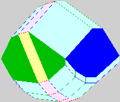

(This page was last updated on October 6, 1997.)
Textbook: There is no textbook at the Coop for this course. Three sets of notes will be distributed in class: The first set is an excerpt from Gunter Ziegler's book Lectures on Polytopes, the second set is Professor Michel Goemans' notes on linear programming, and the third set is a forthcoming book on Combinatorial Optimization by W. Cook, W. Cunningham, W. Pulleyblank and A. Schrijver.
The following books may also serve as useful references for a fuller understanding of particular topics: (in alphabetical order)
This syllabus may change slightly as the semester progresses, so any changes will immediately be distributed in class and also appear at the following web-site: http://www-math.mit.edu/~rojas/325.html.
Course Requirements:
| Date | Topic | Reading | Handout |
|---|---|---|---|
| Sep. 3 | Organizational Meeting and Overview | | |
| Sep. 8 | Convex Geometry | | POLY out |
| Sep. 10 | Mixed Volumes | POLY | ps1 out |
| Sep. 15 | Facets and Initial Terms |
| |
| Sep. 17 | Smith Factorization |
| ps1 due, ps2 out |
| Sep. 22 | No Class! (Student Holiday) | | |
| Sep. 24 | Mixed Subdivisions | | LP out, MV out |
| Sep. 29 | The Sylvester Resultant | | ps2 due |
| Oct. 1 | Simple Toric Varieties | |
|
| Oct. 6 | Duality in Equations | LP1 |
|
| Oct. 8 | Farkas' Lemma | LP2 | ps3 out |
| Oct. 13 | No Class! (Columbus Day) | | |
| Oct. 15 | Duality | LP3 | ps3 due, ps4 out |
| Oct. 20 | The Simplex Method | LP4 | |
| Oct. 22 | Complexity in LP | | ps 4 due |
| Oct. 27 | Interior Point Methods | | |
| Oct. 29 | Proof of Bernshtein's Theorem (Outline) | | |
| Nov. 3 | Discriminants | | |
| Nov. 5 | Mixed Subdivisions | | |
| Nov. 10 | No Class! (Veteran's Day) | | |
| Nov. 12 | Toric Varieties | | ps5 out |
| Nov. 17 | Toric Varieties (+morning guest lecture) | |
|
| Nov. 19 | Algebraic Curves | | ps5 due, ps6 out |
| Nov. 24 | Algebraic Curves | | |
| Nov. 26 | Sparse Resultants | | ps6 due |
| Dec. 1 | Sparse Resultants | | |
| Dec. 3 | Equation Solving | | |
| Dec. 8 | Equation Solving | | |
| Dec. 10 | CLASS PROJECTS | | |
Back to the 18.325 Homepage.